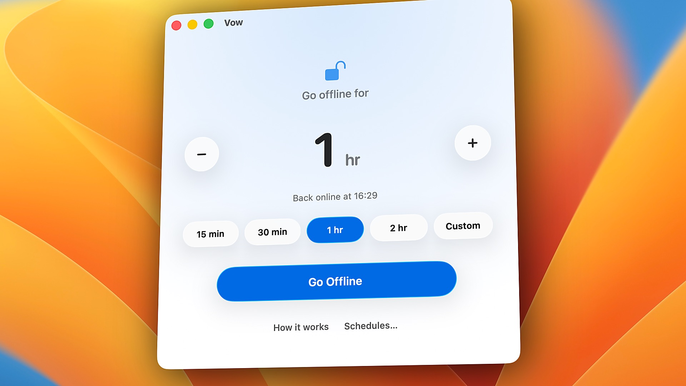
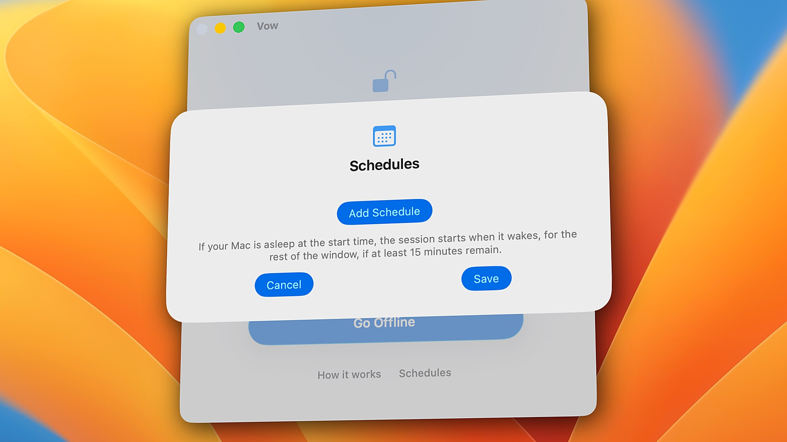
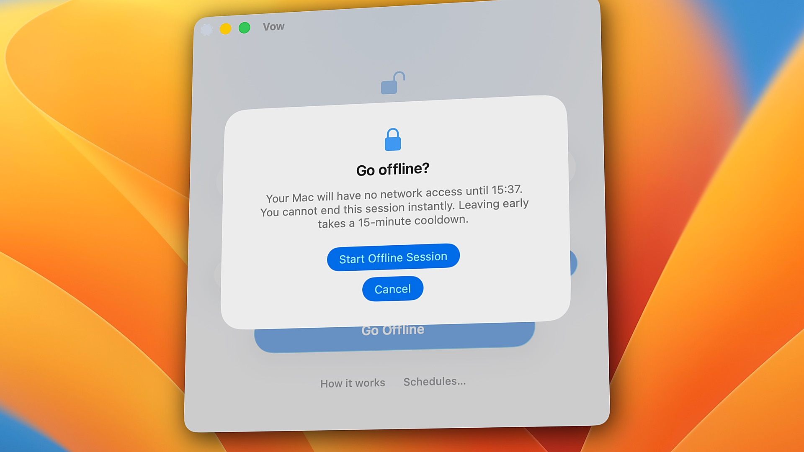
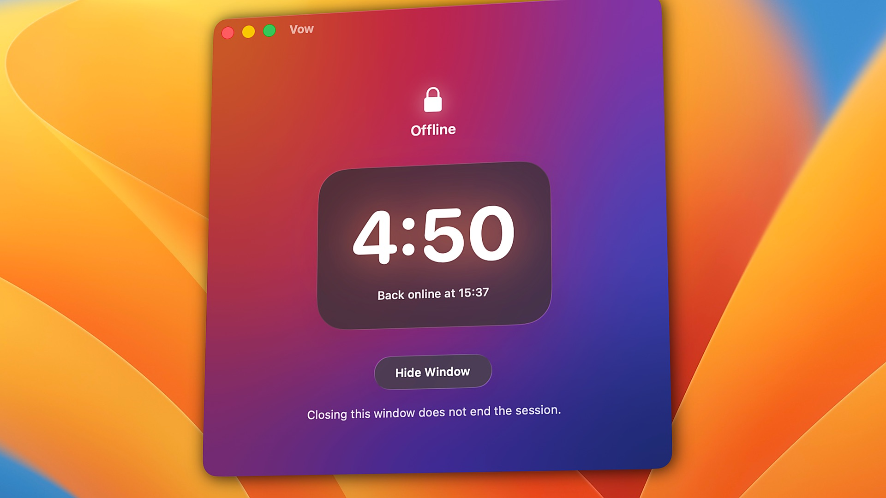
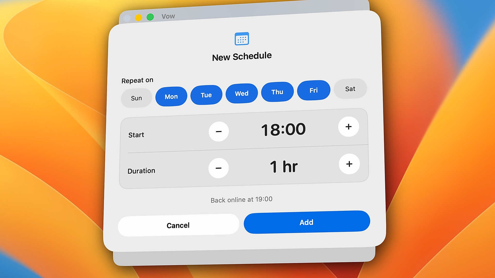

There's always another.
The internet is the distraction.
Vow turns off your Mac's network connections and keeps them off until your timer ends.
Download the app to try 3 full sessions free. Then $9.99 once — no subscription. macOS 26 or later, Apple Silicon.







Stop playing whack-a-mole.
Block YouTube, and you open Netflix. Block WhatsApp, and you move to Telegram. Close Safari, and you open Chrome.
Vow does not maintain a list. It takes your Mac offline entirely. No browser extensions, no accounts, and no blocklists to outsmart.
Set a duration from five minutes to twenty-four hours. You make a vow. The machine keeps it.
Make time for what matters.
Study
Read, write and finish assignments without drifting into YouTube, Reddit or social media.
Deep work
Code, research and write for hours without Slack pings or another browser tab pulling you away.
Family
Set aside an hour or the whole evening for your partner, your kids, or yourself.
Better habits
Step away from endless scrolling, streaming, adult sites, or "just one more episode" at night.
Private work
Keep patient notes, client files or confidential code air-gapped, so nothing goes online by accident.
Local AI & dev
Run Ollama, local models, databases, and localhost servers at full speed in complete silence.
Once you make a Vow, it stays.
- It survives everything
- Quitting Vow or restarting your Mac won't bring the internet back.
- Every connection
- Wi-Fi, Ethernet, USB adapters and iPhone hotspots are all turned off. Plugging in a cable won't get around it.
- No cancel button
- Need out early? You can ask, but your Mac stays offline for 15 more minutes first. Usually the urge passes.
- Your Mac still works
- Files, apps and local AI models keep working. If you code, localhost and local containers (via localhost ports) keep working too.
- Safe if something breaks
- If Vow's saved session is ever damaged, it gives your internet back instead of leaving you stuck.
Small and quiet.
Engineered the macOS way.
How Vow is different.
| Vow | Freedom | Cold Turkey | |
|---|---|---|---|
| What it stops | The whole internet — every browser, app, and terminal tool goes quiet at once | Sites and apps on your lists (or all websites) | Sites and apps on your lists (or all websites via *.*) |
| How it works | Turns off the Mac's network connections using built-in macOS tools | Local system proxy (or Non-Proxy browser filter) + app blocker | Browser extensions check every URL + background agent quits blocked apps |
| Browser extensions | None. Works in every browser automatically and never sees what sites you visit | Optional (Non-Proxy mode hides Firefox on Mac) | Required for website blocking (quits browsers without it; logs site stats by default) |
| Non-browser apps (Discord, Telegram, WhatsApp, Mail) | All offline automatically — apps stay open so you can read old messages offline, with zero new pings | Website blocks only filter proxy traffic; stopping an app closes/hides the app window | Website blocks (*.*) only work in browsers; stopping an app requires Pro and force-quits the app |
| Network settings & VPNs | Clean. Never touches proxies, /etc/hosts, or DNS. Restores your exact pre-session state | Modifies macOS system proxies by default (can conflict with work and commercial VPNs) | Does not modify system proxies or VPN settings |
| Localhost and dev tools | Always work (lo0 loopback stays up; local containers work via localhost ports) | Can conflict with local proxy (needs localhost / 127.0.0.1 proxy bypass rules) | Needs manual Website Exceptions for localhost when blocking all sites (*.*) |
| Lists to keep up to date | None | Yes (websites, apps, and exceptions) | Yes (websites, apps, exceptions, and extensions) |
| If you quit the app | Nothing changes. A system helper (SMAppService) holds the timer across quit and restart | Requires Locked Mode (Premium) + "Block Activity Monitor" enabled | Background agent respawns automatically; extensions close browsers if stopped |
| If an emergency happens | Built-in 15-minute cooldown — stops impulses, but never traps you in a real emergency | Instant cancel in standard mode, or locked until timer ends in Locked Mode | Configurable breaks/delays in Pro, or locked until the timer ends |
| Account needed | No. 100% local on your Mac | Yes (syncs with cloud dashboard) | No (stored locally) |
| Price | $9.99 once (3 free sessions) | $8.99/mo, $39.99/yr, or $99.50 lifetime | $45 once for Pro (free version is websites only) |
| Runs on | Mac only (Apple Silicon) | Mac, Windows, iPhone, iPad, Android, ChromeOS | Mac and Windows |
Pick Freedom or Cold Turkey if you want to block some sites and keep the rest. Pick Vow if you want quiet. Compared November 2026 from each app's public pages.
Private by design. Safe by default.
Privacy. Built in.
No analytics. No tracking. No account. Vow goes online for two things only: checking for updates, and verifying your license key with Gumroad.
Notarized by Apple.
Signed with an Apple Developer ID and scanned by Apple for malware. The background helper has zero networking code and cannot send data anywhere.
Fail-open safety.
If Vow's saved session file is ever corrupted by a power loss or crash, it automatically restores your internet instead of leaving you stranded offline.
Questions.
Is my Mac safe with Vow?
Yes. Vow is signed with an Apple Developer ID and notarized by Apple, which means Apple has scanned it for malware. It has one job: turning your network connections off and back on. It doesn't access your documents, photos, passwords, browser data, or other personal files.
How much information does Vow collect?
None for analytics or tracking. Vow doesn't require an account or your email address.
It only connects to the internet to check for updates and validate your license key with Gumroad. These checks never happen while a session is running.
For more details, you can read our Privacy Policy.
Can I uninstall Vow whenever I want?
Yes! You can uninstall Vow whenever you're not in an active session.
Uninstalling removes both the app and its helper. You'll find step-by-step instructions in Vow's Help menu.
What if something goes wrong and I'm stuck offline?
Vow is designed to restore your internet connection when something goes wrong with its saved timer.
If the timer data is damaged or invalid, Vow restores your network connection rather than leaving you offline indefinitely. If a valid timer is still running, your Mac stays offline until the session ends.
You can also find recovery and uninstall instructions in Vow's Help menu. Still need help? Email us at support@byarnav.com.
Why isn't Vow available on the Mac App Store?
Apple's App Store sandbox restrictions don't allow the kind of system-level control Vow needs to perform its core function.
That's why Vow is distributed directly rather than through the Mac App Store.
However, Vow is signed with an Apple Developer ID and notarized by Apple, so macOS can verify its developer signature and notarization status.
What if I really need the internet during a session?
Life happens. If you absolutely need to get online, you can request an early unlock.
Your Mac will stay offline for another 15 minutes before your internet connection is restored. This gives you time to reconsider and stay focused.
You can change your mind during those 15 minutes and continue your session. If 15 minutes or less are already left, you can simply wait for the timer to finish.
Can I bypass Vow by quitting the app, restarting my Mac, or deleting it?
No. Your session timer continues running even if you quit Vow or restart your Mac.
However, don't delete Vow during an active session. Since your network connection is already disabled at the system level, deleting the app won't restore your internet. It could also remove the helper responsible for restoring your network when the timer ends.
Let your session finish before uninstalling Vow.
Which connections does Vow block? Does Bluetooth still work?
Vow disables your Mac's internet and network connections, including Wi-Fi, Ethernet, VPN connections, and personal hotspots.
It also prevents new network connections from getting you online during an active session.
Bluetooth continues working normally. Your AirPods, wireless mouse, keyboard, and Apple Watch will keep working as usual.
What happens if my Mac is asleep when a scheduled session starts?
Vow handles scheduled sessions even when your Mac is asleep.
If your Mac wakes up within one minute of the scheduled start time, the full session will run.
If it wakes up later, Vow starts the session for the remaining time, provided at least 15 minutes are left in the scheduled window.
What is your refund policy?
We offer a 14-day money-back guarantee. If Vow does not fit your workflow or you are not completely satisfied, simply email support@byarnav.com within 14 days of purchase for a prompt, full refund.
I have a question that's not here. How can I contact you?
We're happy to help!
For questions, technical issues, or anything else related to Vow, email us at support@byarnav.com.
We'll be glad to hear from you.